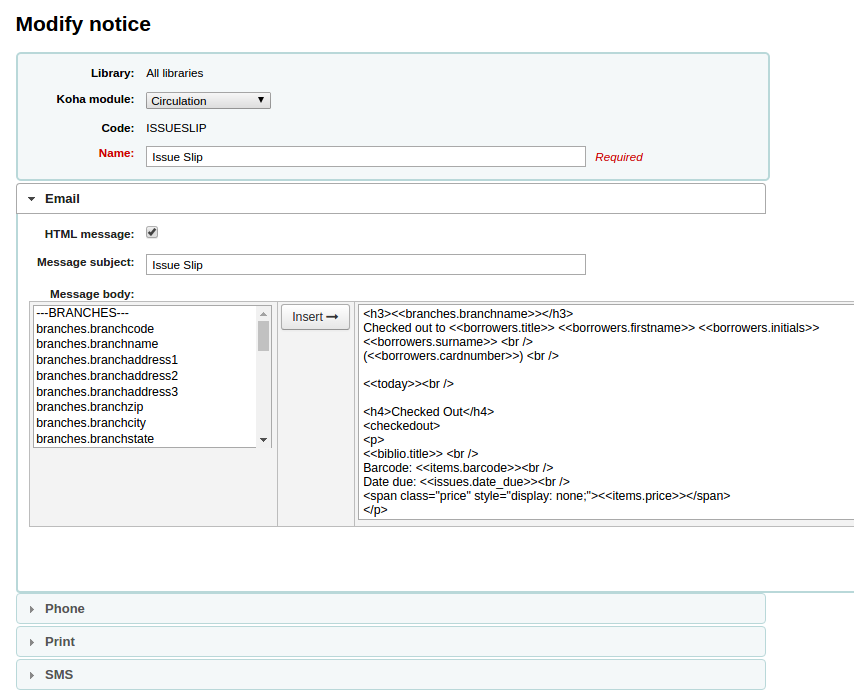

In version 3.161, Koha added 'Message Transport Types' to notices and slips. Prior to that release, there had been separate notices for email, phone and print notices. By and large, this is a definite improvement, but there was one thing that's inconsistent, and I've been getting questions about it, particularly from partners who migrated after 3.16. Print slips -- HOLD_SLIP (formerly RESERVESLIP), ISSUEQSLIP, ISSUESLIP, TRANSFERSLIP and OVERDUES_SLIP -- all use the 'email' message transport type, rather than the 'print' message transport type, as one might expect. The principle reason for this is that the email template shows at the top of the ''Modify notice'' page
'Email' shows first on 'Modify notice' page.
If Koha had used the ''print'' message transport type, and a user didn't think to open that section of the page, it would have appeared that the notice was un-populated, which would have been very confusing to users who had slips defined in Koha 3.14, who were upgrading to 3.16.
Now that we're significantly beyond the 3.16 upgrade, new users who are setting up notices from scratch would rightly think that the 'Print' area would be the logical place to define print slips ... but for historical reasons, we use 'email' instead. We have opened Bug 13498 - ISSUESLIP, ISSUEQSLIP use 'email' template for print to fix this inconsistency, but until that's fixed, It's an issue that users will need to work around.
1Strictly speaking, a lot of the back end work was added in 3.14, but the user facing side of this was added in 3.16.